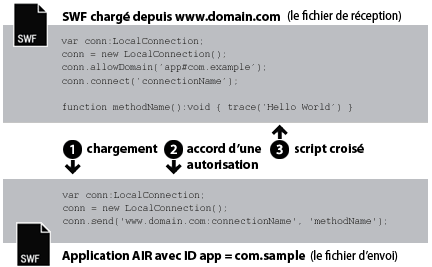

| Package | flash.net |
| Classe | public class LocalConnection |
| Héritage | LocalConnection |
| Version du langage: | ActionScript 3.0 |
| Versions du moteur d’exécution: | AIR 1.0, Flash Player 9, Flash Lite 4 |
- au sein d’un fichier SWF unique ;
- entre plusieurs fichiers SWF ;
- entre le contenu (de type SWF ou HTML) des applications AIR ;
- entre le contenu (de type SWF ou HTML) d’une application AIR et le contenu SWF s’exécutant dans un navigateur.
Prise en charge du profil AIR : cette fonctionnalité est prise en charge sur tous les systèmes d’exploitation de bureau et sur tous les périphériques AIR pour TV, mais ne l’est pas sur les périphériques mobiles. Vous pouvez tester la prise en charge lors de l’exécution à l’aide de la propriété LocalConnection.isSupported. Voir Prise en charge du profil AIR pour plus d’informations sur la prise en charge de l’API dans plusieurs profils.
Remarque : les périphériques AIR pour TV prennent en charge la communication uniquement entre le contenu basé sur SWF dans les applications AIR.
Les connexions locales autorisent ce type de communication entre les fichiers SWF sans passer par fscommand() ni JavaScript. Les objets LocalConnection ne peuvent communiquer qu’avec les fichiers s’exécutant sur un même ordinateur client, mais peuvent s’exécuter dans diverses applications ; un fichier s’exécutant dans un navigateur et un autre dans Adobe AIR, par exemple.
Les objets LocalConnection créés dans ActionScript 3.0 peuvent communiquer avec les objets LocalConnection créés dans ActionScript 1.0 ou 2.0. L’inverse est également vrai : les objets LocalConnection créés dans ActionScript 1.0 ou 2.0 peuvent communiquer avec les objets LocalConnection créés dans ActionScript 3.0. Flash Player gère automatiquement les communications entre les objets LocalConnection de versions différentes.
Il existe trois façons d’ajouter des méthodes de rappel à un objet LocaConnection :
- Créer des sous-classes de LocalConnection et ajouter des méthodes
- Définir la propriété
LocalConnection.clientsur un objet qui implémente ces méthodes - Créer une classe dynamique qui étend la classe LocalConnection et y joindre dynamiquement des méthodes
Pour comprendre comment utiliser les objets LocalConnection afin de permettre les communications entre deux fichiers, il est utile d’identifier les commandes utilisées dans chaque fichier. L’un des fichiers est appelé fichier de réception. Il contient la méthode à appeler. Le fichier de réception doit contenir un objet LocalConnection et un appel de la méthode connect(). L’autre fichier est dit d’envoi. Il s’agit de celui qui appelle la méthode. Le fichier d’envoi doit contenir un autre objet LocalConnection et un appel de la méthode send().
L’utilisation des méthodes send() et connect() varie selon que les fichiers se trouvent dans un même domaine, dans des domaines différents avec des noms prévisibles, ou dans des domaines différents avec des noms imprévisibles ou dynamiques. Les paragraphes ci-après décrivent ces trois situations et présentent des exemples de code pour chacune d’elles.
Même domaine. La manière la plus simple d’utiliser un objet LocalConnection est d’autoriser la communication uniquement entre les objets LocalConnection appartenant au même domaine, car les communications intra-domaine sont autorisées par défaut. Lorsque deux fichiers d’un même domaine communiquent, vous n’avez pas besoin d’implémenter des mesures de sécurité particulières. Vous transmettez simplement la même valeur pour le paramètre connectionName aux deux méthodes connect() et send() :

// receivingLC is in http://www.domain.com/receiving.swf
receivingLC.connect('myConnection');
// sendingLC is in http://www.domain.com/sending.swf
// myMethod() is defined in sending.swf
sendingLC.send('myConnection', 'myMethod');
Domaines différents avec des noms prévisibles. Lorsque deux fichiers SWF de domaines différents communiquent, vous devez autoriser les échanges entre ces derniers en appelant la méthode allowDomain(). Vous devez aussi qualifier le nom de la connexion dans la méthode send() à l’aide du nom du domaine de l’objet LocalConnection de réception :

// receivingLC is in http://www.domain.com/receiving.swf
receivingLC.allowDomain('www.anotherdomain.com');
receivingLC.connect('myConnection');
// sendingLC is in http://www.anotherdomain.com/sending.swf
sendingLC.send('www.domain.com:myConnection', 'myMethod');
Domaines différents avec des noms imprévisibles. Il se peut que vous souhaitiez accroître la portabilité interdomaines du fichier contenant l’objet LocalConnection de réception. Pour éviter de spécifier le nom de domaine dans la méthode send() tout en indiquant que les objets LocalConnection d’envoi et de réception ne se trouvent pas dans le même domaine, faites précéder le nom de connexion d’un caractère de soulignement (_) dans les appels de connect() et send(). Pour autoriser les échanges entre les deux domaines, appelez la méthode allowDomain() et transmettez les domaines à partir desquels vous voulez autoriser les appels LocalConnection. Vous pouvez aussi transmettre l’argument générique (*) pour autoriser les appels en provenance de tous les domaines :

// receivingLC is in http://www.domain.com/receiving.swf
receivingLC.allowDomain('*');
receivingLC.connect('_myConnection');
// sendingLC is in http://www.anotherdomain.com/sending.swf
sendingLC.send('_myConnection', 'myMethod');
De Flash Player à une application AIR. Un objet LocalConnection créé dans le sandbox de l’application AIR utilise une chaîne spéciale comme préfixe de connexion au lieu d’un nom de domaine. Cette chaîne à la forme suivante : app#appID.pubID, où appID correspond à l’ID d’application et pubID à l’ID d’éditeur de l’application. (Incluez l’ID de l’éditeur uniquement si l’application AIR en utilise un.) Par exemple, si une application AIR possède un ID d’application « com.example » mais pas d’ID d’éditeur, vous pouvez utiliserapp#com.example:myConnection comme chaîne de connexion locale. L’application AIR doit également appeler la méthode allowDomain() en transmettant le domaine d’origine du fichier SWF appelant :

// receivingLC is an AIR application with app ID = com.example (and no publisher ID)
receivingLC.allowDomain('www.domain.com');
receivingLC.connect('myConnection');
// sendingLC is in http://www.domain.com/sending.swf
sendingLC.send('app#com.example:myConnection', 'myMethod');
Remarque : si une application AIR charge un fichier SWF en dehors du sandbox de l’application AIR, les règles permettant d’établir une connexion locale avec ce fichier SWF sont les mêmes que les règles permettant d’établir une connexion locale avec un fichier SWF s’exécutant dans Flash Player.
D’une application AIR à Flash Player. Lorsqu’une application AIR communique avec un fichier SWF s’exécutant dans le moteur d’exécution de Flash Player, vous devez autoriser la communication entre les deux en appelant la méthode allowDomain() et en transmettant le préfixe de connexion de l’application AIR. Par exemple, si une application AIR a un ID d’application « com.example » et aucun ID d’éditeur, vous pouvez transmettre la chaîne app#com.example à la méthode allowDomain(). Vous devez par ailleurs qualifier le nom de la connexion dans la méthode send() avec le nom du domaine de l’objet LocalConnection récepteur (utilisez « localhost » comme domaine pour les fichiers SWF chargés à partir du système de fichiers local) :

// receivingLC is in http://www.domain.com/receiving.swf
receivingLC.allowDomain('app#com.example');
receivingLC.connect('myConnection');
// sendingLC is an AIR application with app ID = com.example (and no publisher ID)
sendingLC.send('www.domain.com:myConnection', 'myMethod');
D’une application AIR à une autre application AIR. Pour communiquer entre deux applications AIR, vous devez autoriser la communication entre les deux en appelant la méthode allowDomain() et en transmettant le préfixe de connexion de l’application AIR émettrice. Par exemple, si l’application émettrice possède un ID d’application « com.example » mais pas d’ID d’éditeur, vous pouvez transmettre la chaîne app#com.example à la méthode allowDomain() de l’application réceptrice. Vous devez par ailleurs qualifier le nom de la connexion dans la méthode send() à l’aide du préfixe de connexion de l’objet LocalConnection récepteur :

// receivingLC is an AIR application with app ID = com.sample (and no publisher ID)
receivingLC.allowDomain('app#com.example');
receivingLC.connect('myConnection');
// sendingLC is an AIR application with app ID = com.example (and no publisher ID)
sendingLC.send('app#com.sample:myConnection', 'myMethod');
Vous pouvez utiliser les objets LocalConnection pour envoyer et recevoir des données au sein d’un même fichier, mais ce n’est pas l’implémentation la plus répandue.
Pour plus d’informations sur les méthodes send() et connect(), voir description du paramètre connectionName dans les entrées de LocalConnection.send() et LocalConnection.connect(). Voir également les entrées de allowDomain() et domain.
Plus d’exemples
Eléments de l’API associés
flash.net.LocalConnection.allowDomain()
flash.net.LocalConnection.domain
 Masquer les propriétés publiques héritées
Masquer les propriétés publiques héritées Afficher les propriétés publiques héritées
Afficher les propriétés publiques héritées| Propriété | Défini par | ||
|---|---|---|---|
| client : Object
Indique l’objet sur lequel des méthodes de rappel sont appelées. | LocalConnection | ||
 | constructor : Object
Référence à l’objet de classe ou à la fonction constructeur d’une occurrence donnée d’un objet. | Object | |
| domain : String [lecture seule]
Chaîne représentant le domaine de l’emplacement du fichier actuel. | LocalConnection | ||
| isPerUser : Boolean
Indique si le domaine de l’objet LocalConnection est limité à l’utilisateur actuel (true) ou s’il est accessible à tous les utilisateurs sur le poste de travail (false). | LocalConnection | ||
| isSupported : Boolean [statique] [lecture seule]
La propriété isSupported est définie sur true si la classe LocalConnection est disponible sur la plate-forme actuelle ; dans le cas contraire, elle est définie sur false. | LocalConnection | ||
| Méthode | Défini par | ||
|---|---|---|---|
Crée un objet LocalConnection. | LocalConnection | ||
| addEventListener(type:String, listener:Function, useCapture:Boolean = false, priority:int = 0, useWeakReference:Boolean = false):void
Enregistre un objet écouteur d’événement auprès d’un objet EventDispatcher afin que l’écouteur soit averti d’un événement. | EventDispatcher | |
Spécifie un ou plusieurs domaines qui peuvent envoyer des appels LocalConnection à cette occurrence de LocalConnection. | LocalConnection | ||
Spécifie un ou plusieurs domaines qui peuvent envoyer des appels LocalConnection à cet objet LocalConnection. | LocalConnection | ||
Ferme (déconnecte) un objet LocalConnection. | LocalConnection | ||
Prépare un objet LocalConnection à recevoir les commandes envoyées à partir d’une commande send() (l’objet LocalConnection d’envoi). | LocalConnection | ||
|
Distribue un événement dans le flux d’événements. | EventDispatcher | |
|
Vérifie si des écouteurs sont enregistrés auprès de l’objet EventDispatcher pour un type spécifique d’événement. | EventDispatcher | |
|
Indique si la propriété spécifiée d’un objet est définie. | Object | |
|
Indique si une occurrence de la classe Object figure dans la chaîne de prototype de l’objet spécifié en tant que paramètre. | Object | |
|
Indique si la propriété spécifiée existe et est énumérable. | Object | |
|
Supprime un écouteur de l’objet EventDispatcher. | EventDispatcher | |
Appelle la méthode nommée methodName sur une connexion établie à l’aide de la méthode connect(connectionName) (dans l’objet LocalConnection de réception). | LocalConnection | ||
|
Définit la disponibilité d’une propriété dynamique pour les opérations en boucle. | Object | |
|
Renvoie la représentation de chaîne de cet objet, formatée selon les paramètres régionaux en vigueur. | Object | |
|
Renvoie la représentation sous forme de chaîne de l’objet spécifié. | Object | |
|
Renvoie la valeur primitive de l’objet spécifié. | Object | |
|
Vérifie si un écouteur d’événement est enregistré auprès de cet objet EventDispatcher ou de ses ancêtres pour le type d’événement spécifié. | EventDispatcher | |
| Evénement | Synthèse | Défini par | ||
|---|---|---|---|---|
| [Evénement de diffusion] Distribué lorsque l’application Flash Player obtient le focus du système d’exploitation et devient active. | EventDispatcher | ||
| Distribué lorsqu’une erreur est renvoyée de manière asynchrone ; autrement dit, lorsqu’elle provient du code asynchrone natif. | LocalConnection | |||
| [Evénement de diffusion] Distribué lorsque l’application Flash Player ou AIR perd le focus du système d’exploitation et devient inactive. | EventDispatcher | ||
| Distribué si un appel de LocalConnection.send() tente d’envoyer des données à un autre sandbox de sécurité. | LocalConnection | |||
| Distribué lorsqu’un objet LocalConnection publie son état. | LocalConnection | |||
client | propriété |
client:Object| Version du langage: | ActionScript 3.0 |
| Versions du moteur d’exécution: | AIR 1.0, Flash Player 9, Flash Lite 4 |
Indique l’objet sur lequel des méthodes de rappel sont appelées. L’objet par défaut correspond à this, la connexion locale en cours de création. Si vous réglez la propriété client sur un autre objet, les méthodes de rappel sont appelées sur celui-ci.
Implémentation
public function get client():Object public function set client(value:Object):voidValeur émise
TypeError — La propriété client ne peut pas être réglée sur l’objet null.
|
Plus d’exemples
domain | propriété |
domain:String [lecture seule] | Version du langage: | ActionScript 3.0 |
| Versions du moteur d’exécution: | AIR 1.0, Flash Player 9, Flash Lite 4 |
Chaîne représentant le domaine de l’emplacement du fichier actuel.
Dans le cas de contenu s’exécutant dans le sandbox de sécurité application dans Adobe AIR (contenu installé avec l’application AIR), le moteur d’exécution remplace le super-domaine par la chaîne app# suivie de l’ID correspondant à l’application AIR (défini dans le fichier descripteur de l’application). Par exemple, l’argument connectionName d’une application dont l’ID est com.example.air.MyApp connectionName devient "app#com.example.air.MyApp:connectionName".
Dans les fichiers SWF publiés pour Flash Player 9 ou version ultérieure, la chaîne renvoyée correspond au domaine exact du fichier, y compris aux sous-domaines. Par exemple, si le fichier se trouve à l’adresse www.adobe.com, cette commande renvoie "www.adobe.com".
Si le fichier actuel est un fichier local résidant sur l’ordinateur client et s’exécutant dans Flash Player, cette commande renvoie "localhost".
Les emplois les plus courants de cette propriété consistent à inclure le nom de domaine de l’objet LocalConnection d’envoi en tant que paramètre de la méthode que vous comptez appeler dans l’objet LocalConnection de réception, ou conjointement avec LocalConnection.allowDomain() pour accepter les commandes issues d’un domaine spécifique. Si vous autorisez uniquement la communication entre les objets LocalConnection appartenant au même domaine, vous n’aurez probablement pas besoin d’utiliser cette propriété.
Implémentation
public function get domain():StringEléments de l’API associés
isPerUser | propriété |
isPerUser:Boolean| Version du langage: | ActionScript 3.0 |
| Versions du moteur d’exécution: | Flash Player 10.0.32, AIR 1.5.2 |
Indique si le domaine de l’objet LocalConnection est limité à l’utilisateur actuel (true) ou s’il est accessible à tous les utilisateurs sur le poste de travail (false). Cette propriété affecte uniquement le contenu s’exécutant sous Mac OS X ; les autres plates-formes ignorent ce paramètre. Les connexions sur les systèmes d’exploitation Windows et Linux s’effectuent toujours par utilisateur.
Dans Flash Player 10.0.22 et les versions antérieures, et dans AIR 1.5.1 et les versions antérieures, tous les objets LocalConnection sous Mac OS X ont un domaine global. Définissez toujours cette propriété sur true, à moins que vous ayez besoin de conserver la compatibilité avec les versions précédentes. Dans les futures versions, la valeur par défaut de cette propriété peut changer à true.
La valeur par défaut est false.
Implémentation
public function get isPerUser():Boolean public function set isPerUser(value:Boolean):voidisSupported | propriété |
isSupported:Boolean [lecture seule] | Version du langage: | ActionScript 3.0 |
| Versions du moteur d’exécution: | Flash Player 10.1, AIR 2 |
La propriété isSupported est définie sur true si la classe LocalConnection est disponible sur la plate-forme actuelle ; dans le cas contraire, elle est définie sur false.
Implémentation
public static function get isSupported():BooleanLocalConnection | () | Constructeur |
public function LocalConnection()| Version du langage: | ActionScript 3.0 |
| Versions du moteur d’exécution: | AIR 1.0, Flash Player 9, Flash Lite 4 |
Crée un objet LocalConnection. Les objets LocalConnection vous permettent d’activer les communications entre différents fichiers s’exécutant sur un même ordinateur client.
Eléments de l’API associés
allowDomain | () | méthode |
public function allowDomain(... domains):void| Version du langage: | ActionScript 3.0 |
| Versions du moteur d’exécution: | AIR 1.0, Flash Player 9, Flash Lite 4 |
Spécifie un ou plusieurs domaines qui peuvent envoyer des appels LocalConnection à cette occurrence de LocalConnection.
Vous ne pouvez pas utiliser cette méthode pour permettre aux fichiers hébergés à l’aide d’un protocole sécurisé (HTTPS) d’autoriser un accès à partir de fichiers hébergés avec des protocoles non sécurisés ; vous devez pour cela utiliser la méthode allowInsecureDomain().
Vous pouvez utiliser cette méthode pour faire en sorte qu’un fichier enfant issu d’un domaine différent puisse effectuer des appels LocalConnection vers le fichier parent, sans connaître le domaine final dont émanera le fichier enfant. Cela peut se produire, par exemple, lorsque vous utilisez des redirections d’équilibrage de charge ou des serveurs tiers. Dans ce cas, vous pouvez utiliser la propriété url de l’objet LoaderInfo utilisé avec le chargement de sorte que le domaine s’utilise avec la méthode allowDomain(). Par exemple, si vous chargez un fichier enfant à l’aide d’un objet Loader, à l’issue du chargement, vous pouvez vérifier la propriété contentLoaderInfo.url de l’objet Loader et analyser le domaine à travers la chaîne URL complète. Si vous procédez ainsi, veillez à attendre la fin du chargement du fichier, car la valeur de la propriété contentLoaderInfo.url ne sera correcte et définitive qu’une fois le fichier entièrement chargé.
Le cas contraire peut aussi se présenter : vous pouvez créer un fichier enfant qui souhaite accepter les appels LocalConnection émanant de son parent, mais qui ignore le domaine de ce dernier. Dans ce cas, mettez en œuvre cette méthode en vérifiant si l’argument de domaine correspond au domaine de la propriété loaderInfo.url dans le fichier chargé. Encore une fois, vous devez analyser le domaine à partir de l’adresse URL complète de loaderInfo.url. Dans ce cas, il n’est pas nécessaire d’attendre la fin du chargement du fichier parent ; le parent sera déjà chargé lorsque celui de l’enfant commencera.
Lorsque vous employez cette méthode, tenez compte du modèle de sécurité de Flash Player. Par défaut, un objet LocalConnection est associé au sandbox du fichier qui l’a créé et les appels interdomaines des objets LocalConnection sont interdits, à moins que vous n’appeliez la méthode LocalConnection.allowDomain() dans le fichier de réception. Néanmoins, dans Adobe AIR, le contenu du sandbox de sécurité application (contenu installé avec l’application AIR) n’est pas soumis à ces restrictions de sécurité.
Pour plus d’informations concernant la sécurité, voir la rubrique du Pôle de développement Flash Player : Sécurité (disponible en anglais uniquement).
Remarque : le format de la méthode allowDomain() n’est plus le même que dans ActionScript 1.0 et 2.0. Dans ces versions, allowDomain était une méthode de rappel que vous implémentiez. Dans ActionScript 3.0, allowDomain() est une méthode intégrée de LocalConnection que vous appelez. Le fonctionnement de la nouvelle version de allowDomain() est similaire à celui de flash.system.Security.allowDomain().
Paramètres
... domains — Une ou plusieurs chaînes qui nomment les domaines à partir desquels les appels LocalConnection seront autorisés. Ce paramètre est associé à deux cas spéciaux :
|
Valeur émise
ArgumentError — Les paramètres spécifiés doivent être des chaînes réglées sur une valeur autre que null.
|
Plus d’exemples
Eléments de l’API associés
allowInsecureDomain | () | méthode |
public function allowInsecureDomain(... domains):void| Version du langage: | ActionScript 3.0 |
| Versions du moteur d’exécution: | AIR 1.0, Flash Player 9, Flash Lite 4 |
Spécifie un ou plusieurs domaines qui peuvent envoyer des appels LocalConnection à cet objet LocalConnection.
Le fonctionnement des méthodes allowInsecureDomain() et allowDomain() est identique, mais la méthode allowInsecureDomain() permet en outre aux fichiers de source non HTTPS d’envoyer des appels LocalConnection à des fichiers SWF de source HTTPS. Cette différence n’a d’importance que si vous appelez la méthode allowInsecureDomain() à partir d’un fichier chargé via HTTPS. Vous devez appeler la méthode allowInsecureDomain() même si vous franchissez une limite non HTTPS/HTTPS au sein du même domaine. Par défaut, les appels de LocalConnection entre les fichiers non HTTPS et les fichiers HTTPS sont systématiquement interdits, même au sein d’un même domaine.
L’appel de allowInsecureDomain() est déconseillé, car il risque de compromettre la sécurité offerte par HTTPS. Lorsque vous chargez un fichier via HTTPS, vous avez la quasi-certitude qu’il ne sera pas altéré pendant sa mise en circulation dans le réseau. Si vous autorisez ensuite un fichier non HTTPS à effectuer des appels de LocalConnection vers le fichier HTTPS, vous acceptez des appels en provenance d’un fichier qui a pu être altéré pendant son transport. Vous devez donc redoubler de vigilance, car vous ne pouvez pas vous fier à l’authenticité des appels LocalConnection que reçoit votre fichier HTTPS.
Par défaut, les fichiers hébergés via le protocole HTTPS sont accessibles uniquement aux autres fichiers hébergés également par l’intermédiaire du protocole HTTPS. Cette implémentation préserve l’intégrité fournie par le protocole HTTPS.
Il n’est pas recommandé d’utiliser cette méthode pour annuler le comportement par défaut car elle compromet la sécurité HTTPS. Cependant, vous devrez peut-être l’utiliser, par exemple, si vous devez autoriser l’accès aux fichiers SWF publiés pour Flash Player 9 ou version ultérieure via HTTPS à partir de fichiers SWF publiés pour Flash Player 6 ou version antérieure via HTTP.
Pour plus d’informations concernant la sécurité, voir la rubrique du Pôle de développement Flash Player : Sécurité (disponible en anglais uniquement).
Paramètres
... domains — Une ou plusieurs chaînes qui nomment les domaines à partir desquels les appels LocalConnection seront autorisés. Ce paramètre est associé à deux cas spéciaux :
|
Valeur émise
ArgumentError — Les paramètres spécifiés doivent être des chaînes réglées sur une valeur autre que null.
|
Plus d’exemples
Eléments de l’API associés
close | () | méthode |
public function close():void| Version du langage: | ActionScript 3.0 |
| Versions du moteur d’exécution: | AIR 1.0, Flash Player 9, Flash Lite 4 |
Ferme (déconnecte) un objet LocalConnection. Appelez cette commande lorsque vous ne souhaitez plus que l’objet accepte de commandes, par exemple, lorsque vous souhaitez exécuter une commande connect() en utilisant le même paramètre connectionName dans un autre fichier SWF.
Valeur émise
ArgumentError — L’occurrence de LocalConnection n’est pas connectée, elle ne peut donc pas être fermée.
|
Eléments de l’API associés
connect | () | méthode |
public function connect(connectionName:String):void| Version du langage: | ActionScript 3.0 |
| Versions du moteur d’exécution: | AIR 1.0, Flash Player 9, Flash Lite 4 |
Prépare un objet LocalConnection à recevoir les commandes envoyées à partir d’une commande send() (l’objet LocalConnection d’envoi). L’objet utilisé avec la méthode connect() est appelé objet LocalConnection de réception. Les objets de réception et d’envoi doivent s’exécuter sur le même ordinateur client.
Pour éviter tout conflit, définissez les méthodes associées à l’objet LocalConnection de réception avant d’appeler cette méthode, comme illustré dans l’exemple de la classe LocalConnection.
Par défaut, l’argument connectionName devient "superdomain:connectionName", superdomain représentant le super-domaine du fichier qui contient la commande connect(). Par exemple, si le fichier contenant l’objet LocalConnection de réception se trouve à l’adresse www.someDomain.com, connectionName devient "someDomain.com:connectionName". (si un fichier s’exécutant dans Flash Player se trouve sur l’ordinateur client, la valeur affectée au superdomain est "localhost").
Dans le cas de contenu s’exécutant dans le sandbox de sécurité application dans Adobe AIR (contenu installé avec l’application AIR), le moteur d’exécution remplace le super-domaine par la chaîne app# suivie de l’ID correspondant à l’application AIR (défini dans le fichier descripteur de l’application). Par exemple, l’argument connectionName d’une application dont l’ID est com.example.air.MyApp connectionName devient "app#com.example.air.MyApp:connectionName".
De même, par défaut, Flash Player ne permet à l’objet LocalConnection de réception de n’accepter que les commandes provenant d’objets LocalConnection d’envoi dont le nom de connexion correspond également à une valeur "superdomain:connectionName". De cette manière, Flash Player facilite la communication entre les fichiers situés dans un même domaine.
Si vous implémentez une communication uniquement entre des fichiers appartenant au même domaine, spécifiez pour connectionName une chaîne qui ne commence pas par un caractère de soulignement (_) et qui ne spécifie pas un nom de domaine (par exemple, "myDomain:connectionName"). Utilisez cette même chaîne dans la méthode connect(connectionName).
Si vous implémentez des communications entre des fichiers de domaines différents, la spécification pour connectionName d’une chaîne qui commence par un caractère de soulignement (_) accroît la portabilité interdomaines du fichier associé à l’objet LocalConnection de réception. Les cas de figure possibles sont les suivants :
- Si la chaîne dédiée à l’argument
connectionNamene commence pas par un caractère de soulignement (_), un préfixe suivi de deux points est ajouté au super-domaine (par exemple,"myDomain:connectionName"). Vous avez ainsi la garantie que votre connexion n’entrera pas en conflit avec les connexions de même nom dans d’autres domaines. Cependant, tous les objets LocalConnection d’envoi doivent spécifier ce super-domaine (par exemple,"myDomain:connectionName"). Si le fichier associé à l’objet LocalConnection de réception est déplacé dans un autre domaine, Flash Player modifie le préfixe afin qu’il reflète le nouveau super-domaine (par exemple,« anotherDomain:connectionName »). Tous les objets LocalConnection d’envoi doivent être modifiés manuellement pour pointer vers le nouveau super-domaine. - Si la chaîne dédiée à l’argument
connectionNamecommence par un caractère de soulignement (par exemple,"_connectionName"), aucun préfixe n’est ajouté à la chaîne. Les objets LocalConnection de réception et d’envoi utilisent donc des chaînes identiques pourconnectionName. Si l’objet de réception utiliseallowDomain()pour spécifier que les connexions seront acceptées à partir de tous les domaines, le fichier contenant l’objet LocalConnection de réception peut être déplacé dans un autre domaine, sans qu’il soit nécessaire de modifier les objets LocalConnection d’envoi.
Pour plus d’informations, voir la présentation de la classe et la section consacrée au paramètre connectionName de la méthode send(), ainsi que les entrées de allowDomain() et domain.
Remarque : les deux-points sont utilisés en tant que caractères spéciaux pour séparer le super-domaine de la chaîne connectionName. Toute chaîne associée à connectionName contenant deux-points n’est pas valide.
Lorsque vous utilisez cette méthode, tenez compte du modèle de sécurité Flash Player : Par défaut, un objet LocalConnection est associé au sandbox du fichier qui l’a créé et les appels interdomaines des objets LocalConnection sont interdits, à moins que vous n’appeliez la méthode LocalConnection.allowDomain() dans le fichier de réception. Vous pouvez empêcher un fichier d’utiliser cette méthode en définissant le paramètre allowNetworking des balises object et embed dans la page HTML qui comporte le contenu SWF. Néanmoins, dans Adobe AIR, le contenu du sandbox de sécurité application (contenu installé avec l’application AIR) n’est pas soumis à ces restrictions de sécurité.
Pour plus d’informations concernant la sécurité, voir la rubrique du Pôle de développement Flash Player : Sécurité (disponible en anglais uniquement).
Paramètres
connectionName:String — Chaîne correspondant au nom de connexion spécifié dans la commande send() qui souhaite communiquer avec l’objet LocalConnection de réception.
|
Valeur émise
TypeError — La valeur transmise au paramètre connectionName ne doit pas être nulle.
| |
ArgumentError — Cette erreur peut se produire pour trois raisons : 1) La valeur de chaîne transmise au paramètre connectionName était nulle. Utilisez une valeur non nulle. 2) La valeur transmise au paramètre connectionName contenait un deux-points (:). Les deux-points sont des caractères spéciaux utilisés pour séparer le super-domaine de la chaîne connectionName dans la méthode send(), pas dans la méthode connect(). 3) L’occurrence de LocalConnection est déjà connectée.
|
Plus d’exemples
Eléments de l’API associés
send | () | méthode |
public function send(connectionName:String, methodName:String, ... arguments):void| Version du langage: | ActionScript 3.0 |
| Versions du moteur d’exécution: | AIR 1.0, Flash Player 9, Flash Lite 4 |
Appelle la méthode nommée methodName sur une connexion établie à l’aide de la méthode connect(connectionName) (dans l’objet LocalConnection de réception). L’objet utilisé avec la méthode send() est appelé objet LocalConnection d’envoi. Les fichiers SWF qui contiennent les objets d’envoi et de réception doivent s’exécuter sur le même ordinateur client.
La quantité de données que vous pouvez transmettre en tant que paramètres à cette commande est limitée à 40 Ko. Si send() émet une ArgumentError mais que votre syntaxe est correcte, tentez de répartir les requêtes send() dans plusieurs commandes, chacune comportant moins de 40 Ko de données.
Comme nous l’avons vu à la rubrique connect(), le super-domaine actuel est ajouté à connectionName par défaut. Si vous implémentez la communication entre différents domaines, vous devez définir connectionName dans les objets LocalConnection d’envoi et de réception de sorte que le super-domaine actuel ne soit pas ajouté à connectionName. Pour ce faire, procédez de l’une des deux façons suivantes :
- Placez un caractère de soulignement (_) au début de
connectionNamedans les objets LocalConnection d’envoi et de réception. Dans le fichier contenant l’objet de réception, utilisezLocalConnection.allowDomain()pour spécifier que des connexions seront acceptées de tous les domaines. Cette implémentation vous permet de stocker vos fichiers d’envoi et de réception dans n’importe quel domaine. - Intégrez le super-domaine à
connectionNamedans l’objet LocalConnection d’envoi, par exemple,myDomain.com:myConnectionName. Dans l’objet de réception, utilisezLocalConnection.allowDomain()pour spécifier que les connexions à partir du super-domaine spécifié seront acceptées (dans ce cas, myDomain.com) ou que les connexions de tous les domaines seront acceptées.
Remarque : vous ne pouvez pas spécifier de super-domaine dans connectionName dans l’objet LocalConnection de réception ; vous ne pouvez le faire que dans celui d’envoi.
Lorsque vous utilisez cette méthode, tenez compte du modèle de sécurité Flash Player : Par défaut, un objet LocalConnection est associé au sandbox du fichier qui l’a créé et les appels interdomaines des objets LocalConnection sont interdits, à moins que vous n’appeliez la méthode LocalConnection.allowDomain() dans le fichier de réception. Dans le cas de contenu SWF s’exécutant dans le navigateur, vous pouvez empêcher un fichier d’utiliser cette méthode en définissant le paramètre allowNetworking des balises object et embed dans la page HTML qui héberge le contenu SWF. Néanmoins, dans Adobe AIR, le contenu du sandbox de sécurité application (contenu installé avec l’application AIR) n’est pas soumis à ces restrictions de sécurité.
Pour plus d’informations concernant la sécurité, voir la rubrique du Pôle de développement Flash Player : Sécurité (disponible en anglais uniquement).
Paramètres
connectionName:String — Correspond au nom de connexion spécifié dans la commande connect() qui souhaite communiquer avec l’objet LocalConnection d’envoi.
| |
methodName:String — Nom de la méthode à appeler dans l’objet LocalConnection de réception. Les noms de méthode suivants entraînent l’échec de la commande : send, connect, close, allowDomain, allowInsecureDomain, client et domain.
| |
... arguments — Paramètres facultatifs supplémentaires à transmettre à la méthode spécifiée.
|
Evénements
securityError: — La méthode LocalConnection.send() a tenté de communiquer avec un fichier SWF appartenant à un sandbox de sécurité auquel le code effectuant l’appel n’a pas accès. Vous pouvez contourner ce problème dans l’implémentation de la méthode LocalConnection.allowDomain() du récepteur.
| |
status: — Si la valeur de la propriété level correspond à "status", l’appel a abouti. Si elle correspond à "error", l’appel a échoué. L’appel peut échouer si le fichier SWF de réception refuse la connexion.
|
Valeur émise
TypeError — La valeur de connectionName ou de methodName est nulle. Transmettez des valeurs non nulles à ces paramètres.
| |
ArgumentError — Cette erreur peut se produire pour l’une des raisons suivantes : 1) La valeur de connectionName ou de methodName est une chaîne vide. Transmettez des chaînes valides pour ces paramètres. 2) La méthode spécifiée dans methodName est limitée. 3) Le message sérialisé envoyé est trop volumineux (plus de 40 Ko).
|
Plus d’exemples
Eléments de l’API associés
asyncError | Evénement |
flash.events.AsyncErrorEventpropriété AsyncErrorEvent.type =
flash.events.AsyncErrorEvent.ASYNC_ERROR| Version du langage: | ActionScript 3.0 |
| Versions du moteur d’exécution: | AIR 1.0, Flash Player 9, Flash Lite 4 |
Distribué lorsqu’une erreur est renvoyée de manière asynchrone ; autrement dit, lorsqu’elle provient du code asynchrone natif.
La constanteAsyncErrorEvent.ASYNC_ERROR définit la valeur de la propriété type d’un objet événement asyncError.
Les propriétés de cet événement sont les suivantes :
| Propriété | Valeur |
|---|---|
bubbles | false |
cancelable | false ; il n’existe aucun comportement par défaut à annuler. |
currentTarget | L’objet qui traite activement l’objet Event avec un écouteur d’événements. |
target | L’objet distribuant l’événement. |
error | Erreur qui a déclenché l’événement. |
securityError | Evénement |
flash.events.SecurityErrorEventpropriété SecurityErrorEvent.type =
flash.events.SecurityErrorEvent.SECURITY_ERROR| Version du langage: | ActionScript 3.0 |
| Versions du moteur d’exécution: | AIR 1.0, Flash Player 9, Flash Lite 4 |
Distribué si un appel de LocalConnection.send() tente d’envoyer des données à un autre sandbox de sécurité.
SecurityErrorEvent.SECURITY_ERROR définit la valeur de la propriété type d’un objet événement securityError.
Les propriétés de cet événement sont les suivantes :
| Propriété | Valeur |
|---|---|
bubbles | false |
cancelable | false ; il n’existe aucun comportement par défaut à annuler. |
currentTarget | L’objet qui traite activement l’objet Event avec un écouteur d’événements. |
target | Objet réseau signalant l’erreur de sécurité |
text | Texte à afficher en tant que message d’erreur. |
Eléments de l’API associés
status | Evénement |
flash.events.StatusEventpropriété StatusEvent.type =
flash.events.StatusEvent.STATUS| Version du langage: | ActionScript 3.0 |
| Versions du moteur d’exécution: | AIR 1.0, Flash Player 9, Flash Lite 4 |
Distribué lorsqu’un objet LocalConnection publie son état. Si LocalConnection.send() aboutit, la valeur de la propriété level de l’objet d’événement status correspond à "status". Dans le cas contraire, la propriété level correspond à "error". Si le fichier de réception refuse la connexion, l’appel peut échouer sans que le fichier d’envoi n’en soit averti.
type d’un objet événement status.
Les propriétés de cet événement sont les suivantes :
| Propriété | Valeur |
|---|---|
bubbles | false |
cancelable | false ; il n’existe aucun comportement par défaut à annuler. |
code | Description de l’état de l’objet. |
currentTarget | L’objet qui traite activement l’objet Event avec un écouteur d’événements. |
level | Catégorie du message, telle que "status", "warning" ou "error". |
target | Objet publiant son état. |
Eléments de l’API associés
Une occurrence de LocalConnection est créée dans le fichier SWF LocalConnectionSenderExample. Lorsque l’utilisateur appuie sur le bouton, la méthode call() est utilisée pour appeler la méthode lcHandler dans le fichier SWF contenant le nom de connexion « myConnection » et le contenu de TextField est transmis en tant que paramètre.
Une occurrence de LocalConnection est créée dans le fichier SWF LocalConnectionReceiverExample et la méthodeconnect() est appelée pour désigner ce fichier SWF comme destinataire des messages adressés à la connexion « myConnection ». En outre, cette classe comprend une méthode publique intitulée lcHandler(). Il s’agit de la méthode appelée par le fichier SWF LocalConnectionSenderExample. Lorsqu’elle est appelée, le texte reçu en tant que paramètre est ajouté à TextField sur la scène.
Remarque : pour tester l’exemple, chargez les deux fichiers SWF simultanément sur le même ordinateur.
// Code in LocalConnectionSenderExample.as
package {
import flash.display.Sprite;
import flash.events.MouseEvent;
import flash.net.LocalConnection;
import flash.text.TextField;
import flash.text.TextFieldType;
import flash.events.StatusEvent;
import flash.text.TextFieldAutoSize;
public class LocalConnectionSenderExample extends Sprite {
private var conn:LocalConnection;
// UI elements
private var messageLabel:TextField;
private var message:TextField;
private var sendBtn:Sprite;
public function LocalConnectionSenderExample() {
buildUI();
sendBtn.addEventListener(MouseEvent.CLICK, sendMessage);
conn = new LocalConnection();
conn.addEventListener(StatusEvent.STATUS, onStatus);
}
private function sendMessage(event:MouseEvent):void {
conn.send("myConnection", "lcHandler", message.text);
}
private function onStatus(event:StatusEvent):void {
switch (event.level) {
case "status":
trace("LocalConnection.send() succeeded");
break;
case "error":
trace("LocalConnection.send() failed");
break;
}
}
private function buildUI():void {
const hPadding:uint = 5;
// messageLabel
messageLabel = new TextField();
messageLabel.x = 10;
messageLabel.y = 10;
messageLabel.text = "Text to send:";
messageLabel.autoSize = TextFieldAutoSize.LEFT;
addChild(messageLabel);
// message
message = new TextField();
message.x = messageLabel.x + messageLabel.width + hPadding;
message.y = 10;
message.width = 120;
message.height = 20;
message.background = true;
message.border = true;
message.type = TextFieldType.INPUT;
addChild(message);
// sendBtn
sendBtn = new Sprite();
sendBtn.x = message.x + message.width + hPadding;
sendBtn.y = 10;
var sendLbl:TextField = new TextField();
sendLbl.x = 1 + hPadding;
sendLbl.y = 1;
sendLbl.selectable = false;
sendLbl.autoSize = TextFieldAutoSize.LEFT;
sendLbl.text = "Send";
sendBtn.addChild(sendLbl);
sendBtn.graphics.lineStyle(1);
sendBtn.graphics.beginFill(0xcccccc);
sendBtn.graphics.drawRoundRect(0, 0, (sendLbl.width + 2 + hPadding + hPadding), (sendLbl.height + 2), 5, 5);
sendBtn.graphics.endFill();
addChild(sendBtn);
}
}
}
// Code in LocalConnectionReceiverExample.as
package {
import flash.display.Sprite;
import flash.net.LocalConnection;
import flash.text.TextField;
public class LocalConnectionReceiverExample extends Sprite {
private var conn:LocalConnection;
private var output:TextField;
public function LocalConnectionReceiverExample() {
buildUI();
conn = new LocalConnection();
conn.client = this;
try {
conn.connect("myConnection");
} catch (error:ArgumentError) {
trace("Can't connect...the connection name is already being used by another SWF");
}
}
public function lcHandler(msg:String):void {
output.appendText(msg + "\n");
}
private function buildUI():void {
output = new TextField();
output.background = true;
output.border = true;
output.wordWrap = true;
addChild(output);
}
}
}
Tue Jun 12 2018, 09:30 AM Z